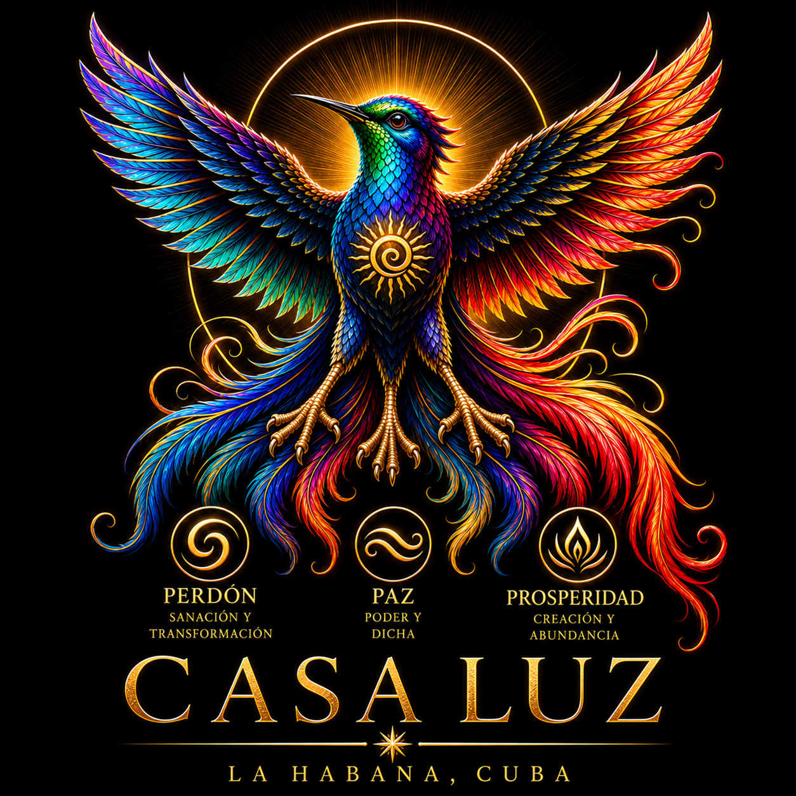
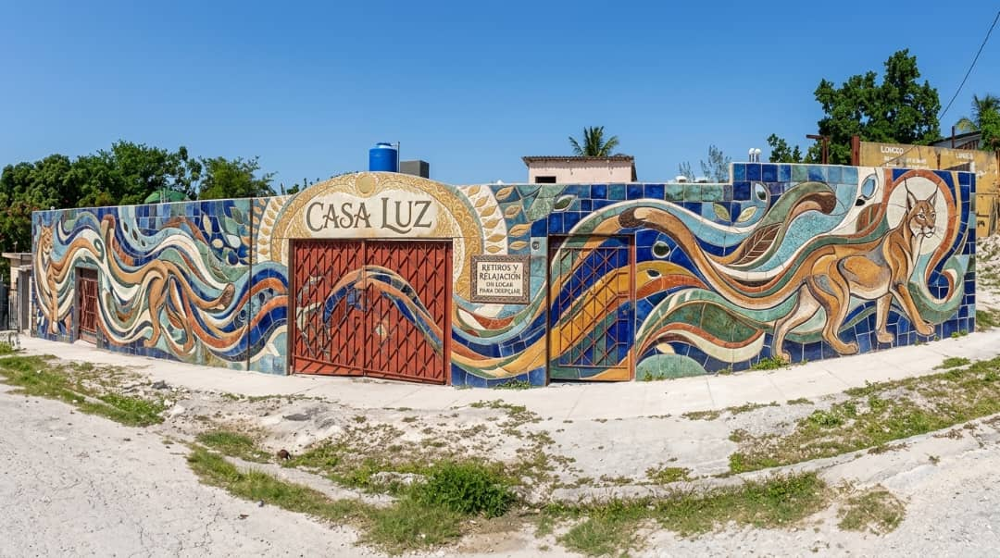
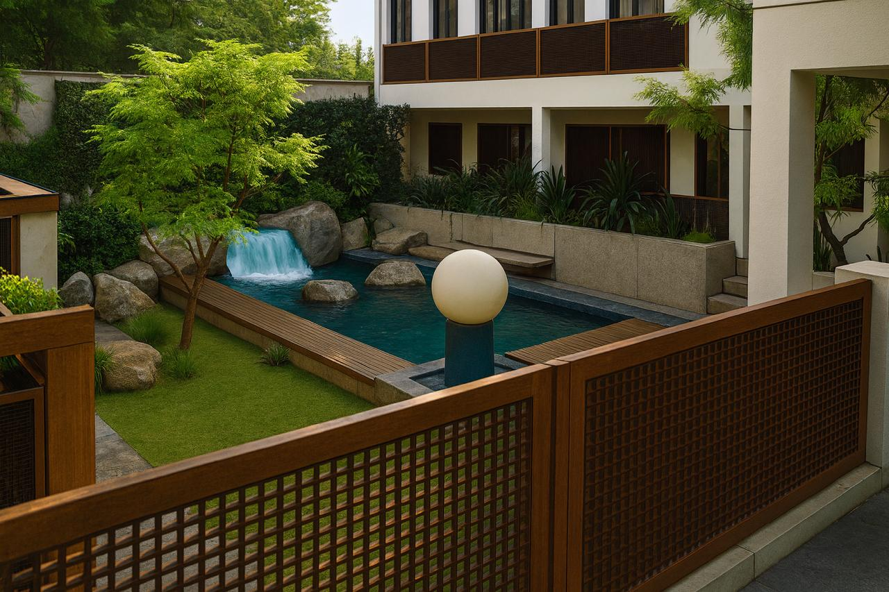

PERDÓN
Sanación y Transformación
El perdón nos invita a liberarnos del peso del pasado, sanar nuestras heridas y transformar el dolor en sabiduría. No significa olvidar lo vivido, sino elegir que nuestras heridas no determinen nuestro futuro.
LA HABANA · CUBA

Tu Gimnasio pa’l Alma.
Un espacio comunitario de encuentro, crecimiento personal y despertar espiritual en el corazón de La Habana.
Como Adentro, Así Afuera

Casa Luz nace de una profunda convicción: cuando transformamos nuestro mundo interior, comenzamos a transformar el mundo que nos rodea.
Creemos en el poder del amor para unirnos, del perdón para liberarnos y de la paz para transformar nuestras vidas. Cada ser humano lleva dentro una luz capaz de iluminar su propio camino y también el de quienes le rodean.
Nuestra casa es un lugar para compartir, aprender, reflexionar, sanar y celebrar la vida. Un espacio donde cultivamos la esperanza, fortalecemos los vínculos humanos y descubrimos que, aun en medio de las dificultades, siempre podemos elegir una nueva manera de vivir.
Aquí, la espiritualidad se encuentra con la vida cotidiana. Honramos el amor a Dios y respetamos los diferentes caminos y creencias, reconociendo aquello que nos une por encima de lo que nos separa.
Los caminos que nos inspiran a construir una vida —y una Cuba— más plena.
Sanación y Transformación
El perdón nos invita a liberarnos del peso del pasado, sanar nuestras heridas y transformar el dolor en sabiduría. No significa olvidar lo vivido, sino elegir que nuestras heridas no determinen nuestro futuro.
Poder y Dicha
La paz comienza en nuestro interior. Al cultivar la serenidad, la consciencia y la armonía entre el corazón y la mente, descubrimos nuestro poder para responder a la vida desde el amor y experimentar una dicha que no depende solamente de las circunstancias externas.
Creación y Abundancia
La verdadera prosperidad comienza al reconocer la riqueza que ya habita en nosotros. Es mucho más que bienestar material: salud, amor, creatividad, propósito, relaciones significativas y la capacidad de compartir nuestros dones para construir una vida más plena. Una Cuba más plena. ¡Una Cuba abundante!
Espacios concebidos para aprender, compartir y convivir. Estos renders representan una visión arquitectónica, no fotografías de una obra finalizada.

La casa matriz, las aulas, las habitaciones y los espacios compartidos forman parte de una visión que sigue tomando forma.
Explorar todos los renders ↗Preparando la galería arquitectónica…
Explora los cuatro documentos de planificación. Puedes ampliarlos o abrirlos en otra pestaña.
Imágenes y videos de los trabajos realizados. Cada fotografía es un testimonio real del proceso de transformación física de Casa Luz.
Organizando las fotografías de construcción…
Selecciona un video para verlo en tamaño ampliado, aquí mismo, sin salir de Cuba Feliz. Algunos videos aún dependen de los permisos de su archivo original mientras finalizamos su conexión con Cloudflare.
Mientras Casa Luz continúa su proceso de construcción y transformación física, sus puertas ya se han abierto a encuentros para personas que han participado en Eligiendo Milagros y Plétora.
En Guanabacoa hemos contado con un espacio alquilado gracias a las Hijas de María Auxiliadora. Los encuentros gratuitos llamados Tertulias de Tribu nos permiten compartir enseñanzas, reflexiones, ejercicios y momentos de convivencia que fortalecen nuestros vínculos.
Continuamos aprendiendo, acompañándonos mutuamente y llevando a la vida cotidiana lo que descubrimos en nuestras experiencias de transformación.
«No tenemos que esperar a que todo sea perfecto para comenzar a compartir nuestra luz».
Soñamos con una Casa Luz que continúe creciendo como un espacio de inspiración, servicio, solidaridad y transformación para nuestra comunidad. Un lugar donde cada persona se sienta bienvenida, valorada y capaz de contribuir a un futuro más amoroso, pacífico y próspero para nuestra isla.
Cada gesto de generosidad puede contribuir a construir una comunidad más unida, amorosa y esperanzada.